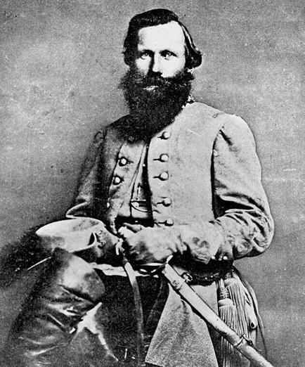
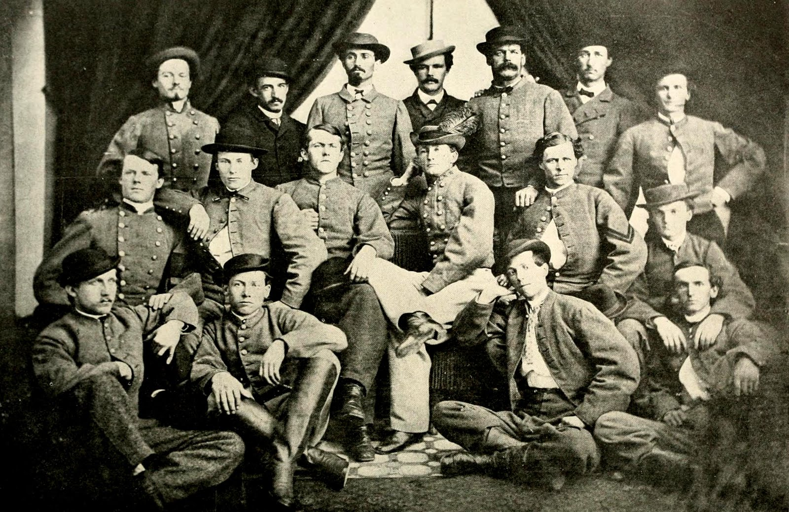
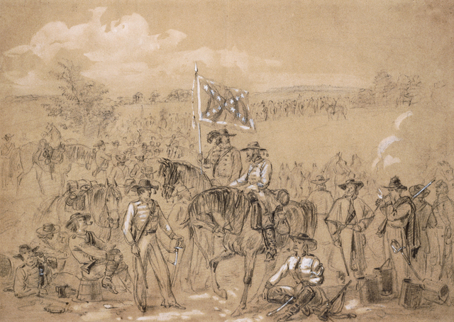

|
The Cavalier's Glee
Spur on! Spur on! We love the
bounding
Of barbs that bear us to the fray;
"The
Charge!" our bugles now are sounding,
And our bold
Stuart leads the way.
The path of honor lies before
us,
Our hated foeman gather fast;
At home bright
eyes are sparkling for us-
We will defend them to the
last.
Spur on! Spur on! We love the
rushing
Of steeds that spurn the turf they tread
When through the invaders ranks they're crushing
With
our proud battle fag o'erhead.
The path of honor lies
before us,
Our hated foeman gather fast;
At home
bright eyes are sparkling for us-
We will defend them to
the last.
Spur on! Spur on! We love the
flashing
Of blades that battle to be free
'Tis for
our sunny South they're clashing
For household, God and
liberty.
The path of honor lies before us,
Our hated
foeman gather fast;
At home bright eyes are sparkling
for us-
We will defend them to the last.
-Captain William Willis Blackford
While gazing upon Bloody Lane at the Antietam
Battlefield, Vietnam General John A. Wickham expressed in
amazement that, "You couldn't get American soldiers today to
make an attack like that." Whether or not his statement is
indeed correct, his sentiments of incredulity are surely
felt by every student of the Civil War. What made these
three million men leave their homes to face this kind of
horror? Why did they write home to their families that they
planned to remain until the bitter end? Although each
soldier's reasoning for enlisting, fighting and staying in
the war differed from their comrades, in the end all of this
reasoning developed from their morale. As George Catlett
Marshall wrote in his Military Review: "It is not enough to
fight. It is the spirit that we bring to the fight that
decides the issue. It is morale that wins the victory." He
continued his explanation with, "Morale is the state of
mind. It is steadfastness and courage and hope. It is
confidence and zeal and loyalty. It is clan, esprit de
corps and determination." When morale soars high, all of
these other qualities follow but when morale sinks low, the
correlation continues. Therefore, the difference between
victory and failure in the Civil War as with every other war
relies upon the state of the soldiers' morale.
Within the study of the Civil War, there is an ongoing
debate over the motives most responsible for the changes in
the morale of the soldiers. On the one hand, Bell Wiley
claims that "American soldiers of the 1860s appear to be
about as little concerned with ideological issues as were
those of the 1940s." He understands that the soldiers
were more interested in their own reputation at home and
their relationships with their comrades. James McPherson,
though, disagrees, using evidence from diaries and letters
that demonstrates quite clearly that the majority of
soldiers were concerned over ideological issues and that
their most common reason for fighting was for liberty. In
fact, the truth lies in a combination of the two theories
with one being more important than the other depending upon
the individual regiment and soldier. As Douglas MacArthur
stated in his Annual Report of the Chief of Staff. "The
unfailing formula for production of morale is patriotism,
self-respect, discipline, and self-confidence within a
military unit, joined with fair treatment and merited
appreciation from without." The way in which every army can
achieve victory is through the cultivation of these six
components by the soldiers, their leaders, families and
friends. Because they are each connected to one another,
they must all surpass those of the enemy in order to claim
success.
To many Americans, there is something extraordinarily
magical about the desperate struggle of the Confederacy
against the enormous power of the Union. This feeling,
though, seems rather awkward since the south was fighting
for the preservation of slavery. The reason Americans find
the Confederates so fascinating is due to their ability to
maintain such strong morale for so many years. Stories of a
great southern icon like JEB Stuart touch Americans' hearts
because he represents the fallen hero, the one who was so
romantically devoted to his Virginia that he fought against
the country he had once served so faithfully. He and his
men from the First Virginia Cavalry were very well-known for
their immense confidence and determination. Riding proudly
on their horses following the plume on Stuart's hat, the men
possessed an extreme amount of morale at least up until
Gettysburg. Even afterwards, their morale only wavered for
|

The 1st Virginia was under the command of
Maj. Gen. J.E.B. Stuart for most of the Civil War.
|
the next couple of years instead of disappearing completely.
Although in many ways their roles as cavalrymen were much
more exciting and more enjoyable than ordinary infantrymen,
they also were able to uphold their morale for many of the
same reasons including their faith in ideology, their
support from home and, most of all, their sense of duty and
honor. Above all, though the man most responsible for the
First Virginia's dashing exploits and incredible abilities
was their famed leader: James Ewell Brown Stuart. He
skillfully turned these rakish, difficult upper class men
into united, able soldiers who were famous throughout the
world. Stuart understood these men; he realized how to use
the six components mentioned above to generate a high morale
and in turn success. Due to his loyalty and dedication to
his regiment as well as to the Confederate mission as a
whole, they in return gave him their admiration and respect,
something they never expected to show a West Point man. Even
the great Stuart, though, was not able to continue this high
morale when the Confederate Army began to face the tough
years after Gettysburg. Although he and his men still
fought bitterly by continuing to hold onto the bonds Stuart
had created early in the war and returning to their
dedication to honor and faith in religion, their waning
morale was definitely noticeable and something with which
they constantly had to contend.
'The Virginians were born conservatives, constitutionally
opposed to change. They loved the old because it was old,
and disliked the new, if for no better reason, because it
was new; for newness and rawness were well-nigh the same in
their eyes." Reading this statement, it would seem very
unlikely then that the men of Virginia would support the war
effort since a new country obviously meant change. Indeed,
many of the First Virginia Cavalry including Captain William
Blackford did not support secession in the beginning, but
once they were asked to support the sovereignty of the Union
over their beloved state, they felt obligated to follow the
path of the south. As Blackford explained:
I was opposed to secession and voted against the
secession candidate ... I thought that Lincoln, though, a
sectional candidate was constitutionally elected and that we
ought to have waited to see what he would do. But when he
called for troops from Virginia and we had to take one side
or the other, then of course I was for going with the South
in her mad scheme, right or wrong.
Being that they believed so strongly in the view that the
states were their own nations while "the general government
was little more than their accredited agent," the Virginia
cavalrymen felt a very strong pull to the cause of the
Confederacy. They felt a powerful duty to their state that
would only grow stronger and more intense as the years wore
on. It would be a major factor in helping them to endure
the war while their morale was under the strain of failure.
Since the Confederacy required that all of the cavalrymen
provided their own horses and equipment, the men of the
First Virginia were for the most part wealthy. Not only was
morale easier for them to uphold because they had servants
to assist them and their family was capable of sending them
warm clothes and extra food, but they also owned large
plantations with many slaves, which gave them a greater
stake in the war than the Southerners without slaves. In
writings like Blackford's, they in fact defended slavery by
remarking, "Now can any unprejudiced person, who wishes the
Negro well, wish them to have remained in heathenism and
barbarism as they were when slavery rescued them from it?"
Although as Wiley described in Billy Yank that of the Union
soldiers, "scarcely one in ten had any real interest in
emancipation per se," the Virginians did perceive
emancipation as a serious threat. They figured that it was
"Better, far better! endure all the horrors of civil war
than to see the dusky sons of Ham leading the fair daughters
of the south to the altar." In other words, the institution
of slavery represented the southern way of life to the
conservative Virginians. Although they despised change,
they figured that without the change caused by secession,
the life to which they were so attached would change
dramatically. Instead of viewing themselves as liberals,
the Virginians chose to picture themselves as preserving the
old: they were fighting for the same liberty as their
forefathers during the Revolution. They were even fighting
for the same liberty as their northern counterpart, Cicero
Franchcr, who wrote eloquently in his diary, "The most
sacred gift that mortals prize yet to secure a country
environed with the golden chains of Liberty and freedom."
The problem was that these soldiers from slaveholding
families, "tended to emphasize the right of property in
slaves as the basis of the liberty for which they fought."
They figured that without the right to own slaves, they
would not possess the freedom so essential to their identity
as Americans.
The strong patriotism for the Confederacy that was
beginning to emerge and the passionate anger towards
emancipation caused the men of the First Virginia to be
extremely fired up and ready to enlist after Fort Sumter.
They even began to refer to the south as "my country." As a
member of the regiment, George Cary Eggleston explained,
"The unanimity of the people was simply marvelous. So long
as the question of secession was under discussion, opinions
were both various and violent. The moment secession was
finally determined upon, a revolution was wrought. There
was no longer anything to discuss so discussion ceased."
Many so strongly believed in their cause that they divided
against friends and family. Stuart, for instance, decided
to return from the west to join the Confederacy while his
father-in-law and mentor, Colonel Philip St. George Cooke,
remained with the Union. Even after Stuart's death, his
wife, Flora continued to side with her husband instead of
her family by remaining in Virginia for the next fifty years
until her own death. Also, in another example, during the
early months of the war, Stuart spotted his good friend
Capt. Perkinson in the middle of training exercises. At
first he greeted Perkinson very gregariously with "Why,
howdy, Perk! When did you come over? It's good to see
you-what's your command?" Once Perkinson, though, pointed to
a regiment of Union soldiers, Stuart quickly rebuffed him
with, "Oh, the deuce! I didn't know you stayed with the
Union-Good-bye." There was also Jack Swan who left his twin
brother in Maryland to fight with the First Virginians. At
one point later in the war, during the Battle at Brandy
Station, he came very close to killing his beloved brother.
These men of First Virginia, who after the Election of 1860,
had generally disagreed with secession, were now so devoted
to their duty as Virginians, their loyalty to the south, and
their feelings against emancipation, that when they met
their leader Stuart, their thoughts were definitely focused
upon victory.
In many ways, the First Virginia had an easier time
holding up their morale than the Confederate Infantry by the
very nature of cavalry. As opposed to the infantrymen,
their life on horseback was one of excitement and thrill
mixed with audacity and skill. They did not have to endure
the painful, never-ending marches carrying upwards of forty
pounds on their back. The effectiveness of the cavalry can
be attributed to its ability "to strike unexpectedly and
with intimidating rapidity." Due to their mobility, they
could succeed in ways that an infantry regiment would figure
impossible. They could ride through the Union lines
unbeknownst to their enemies in order to act as spies and
thieves. They could also redeploy at many different points
in order to delay both the enemy's army as well as prevent
their cavalry from performing the same functions of spying
and destruction. Because the cavalry were expected to
perform such a vast array of duties, the men did not have to
suffer the same dull and tedious lifestyle as ordinary
soldiers. This ability to be constantly occupied and moving
translated into the cavalrymen not being as prone to
depression or a decrease in their morale.
With most of the fighting taking place in Virginia for
this regiment, the cavalrymen being so mobile were able to
visit their families a lot more easily. The close proximity
of their homes allowed them the benefit of not having to
endure the loneliness and heartache with which most men who
missed their families had to cope. Also, at home they would
receive the necessary supplies they needed to exist
comfortably through the war. Even when the supplies at home
began to wane in the latter part of the war, the cavalrymen
could always obtain supplies from the Union supply lines
which they were supposed to terrorize and destroy as one of
their duties. For example, one of Stuart's officers wrote
about a particular raid to his mother, "They got for
instance 300 pair of fine boots, boxes of champagne, claret,
cheese, and numerous other articles out of the sutler's
wagons." For an army that had trouble finding shoes and food
for most of their men, these discoveries made life for the
cavalrymen a lot easier. Because their basic human needs of
love, food and clothing were usually provided, the soldiers
of the First Virginia did not have to face the same
debilitating difficulties of the war and therefore, stood a
much better chance to keep a high morale.
Although the men of the First Virginia now possessed the
rationale for a successful experience in war, they needed
someone to unite them and lead them with both discipline and
respect to victory. This man who began as their Lt. Colonel
and quickly rose to the position of Major General of the
entire Army of Northern Virginia Cavalry division was the
southern hero: James Ewell Brown Stuart. Without his
skillful leadership, these gentlemen could never have become
the famed soldiers of the Confederate Cavalry. Their daring
exploits and amazing precision during fighting were studied
by many foreign cavalrymen including even the Prussians
during their struggle to unite Germany. As J. Scheibert
wrote to J.W. Jones, "General von Schmidt, the regenerator
of Prussian cavalry tactics, has told me that Stuart was the
model cavalry leader of this century and has questioned me
very often about his mode of fighting." Through the tactics
of using discipline to teach them, acting as a model to earn
their respect, and encouraging camaraderie to unite them,
Stuart created the type of relationship between a leader and
his men that was so crucial to their success. As long as he
was riding right in front with his head held high, yelling
the famous rebel yell, his men were there behind him, but
when numerous failures beginning with Brandy Station caused
even the flamboyant Stuart to have doubts, his men's morale
wavered as well. The feelings they brought with them from
home and the ability to eat well and visit their families
were very important parts to the production of morale in
this regiment; it was the personality of Stuart, though,
that added the spices that made these members great. He
added to their high morale and then guided it towards
triumph.
Because American and especially southern society during
the Victorian era "prized individualism, self-reliance and
freedom from a coercive society," the men were extremely
difficult to train at the beginning of the war. After all,
since one of their major reasons for fighting was freedom
from tyranny, they did not understand the need for obeying
orders. Coming from upper class families, they had been
spoiled and accustomed to having control over their own
lives, but now in the army, they were expected to release
some of their freedoms for the overall cause of the
Confederacy. The only rank that mattered according to these
men was "the line of demarcation between gentry and common
people" which was "not more sharply drawn anywhere than in
Virginia." For example, during one instance when a
gentleman-at-arms left his ranks to talk with his captain,
Capt. John W. Thomason described the soldier's reaction to
Stuart's reprimand, "At once there is a blast, in a bronze,
ringing voice, that blows him back, crimson-faced, into
ranks, amazed and furious. Never in his life has he been so
spoken to! He sits and quivers, conscious of sympathetic
glances from the adjacent files. No way to talk to a
gentleman by God! By God, these West Pointers!" By in
Stuart's words, "reducing [them] to the ranks," he was able
to keep them in line for the first part of the war until in
battle he was able to prove to them how successful following
orders could be.
In the summer of 1891, Stuart set his mind to training
his men repeatedly in order to give them self-confidence,
one of the necessary components of morale. While the other
regiments were relaxing in the camps, Stuart forced the
First Virginia to be up early and out on the field. As
George McClellan described, "Outpost duty with Stuart did
not consist in the mere routine of establishing pickets and
posting videttes; it was the school of instruction for his
inexperienced but willing soldiers, and he himself was their
ready and thorough instructor." He had them ride all day,
practice formations and fight mock battles. When the first
|

Col. John Singleton Mosby and his men, who earned
fame during the Civil War for their daring exploits, were attached
to the 1st Virginia Cavalry.
|
battle finally arrived, he wanted them to be prepared and
confident enough to fight so they would not desert like so
many other soldiers. Life with Stuart, though, was never
boring. One day during ordinary training, Stuart said
eagerly with dancing eyes gleaming, "Come on, you fellows:
We're going to have some fun!" Then with a gallop over the
hill and through a thin forest, they suddenly found
themselves at a federal battery. As the Union soldiers shot
their cannons at the group, the men were terrified while
Stuart looked on confidently. Afterwards, he exclaimed with
his famous guffaw, "There, I wanted you to learn what a
cannon's like and hear it. They fired high; they always do.
You see there's no harm in them." Then as his men began to
gallop back to camp, Stuart called out an order: "Remember,
cavalry gallops at the enemy, and trots away, always. No
gait is worthy of a cavalryman . . . A good man on a good
horse need never get into trouble- " Stuart knew that in
order for his men to win, they could not be scared during a
battle. By starting small entanglements with the enemy,
using men's desire for an honorable reputation to encourage
them to gallop toward the enemy and trot away, and most
importantly giving them the necessary training in target
practice and fighting on horseback, the men were certain not
to act like green soldiers when they entered their first
battle. Stuart taught them to expect victory because "he
knew that confidence in victory made victory that much
easier to achieve" The problems the other armies faced with
desertion and the need to discipline with more than a
reprimand never touched the First Virginia because Stuart's
leadership and understanding of these inexperienced men
resulted in them possessing a high amount of confidence and
with that a high morale in battle.
"Stuart demanded and received the best his staff could
deliver, and those who could not meet his standards were
replaced with those who could. Yet his men loved him
because he asked nothing of them that he was not willing to
do himself." The reason Stuart was such an effective leader
was because he was a man who merited admiration and respect.
He was a symbol of high morale for his soldiers; an example
they could follow. There was never a discrepancy between
how he told his men to behave and how he would act himself.
In battles, instead of remaining behind like some generals,
he would lead his men confidently into the fray. For
instance, one infantryman recalled Stuart's personal example
in a critical moment during battle: "He leaped his horse
over the breastworks near my company and when he had reached
a point about opposite the center of the brigade, while the
men were loudly cheering him, he waved his hand towards the
enemy and shouted, "Forward men! Forward! Just follow me."
In the words of Eggleston, "Jeb never says 'Go, boys,' but
always 'Come, boys.'" The men of the First Virginia could
not help but to respect a man who cared about them so much
that he would at times keep them company all night while
they were on picket duty. They realized how much he cared
for them and soon loved him just as dearly. As Eggleston
described the soldiers' feelings towards their leader:
We learned to hold in high regard our colonel's masterly
skill in getting in and out of perilous positions. He
seemed to blunder into them in sheer recklessness, but in
getting out he showed us the quality of his genius. And
before we reached Manassas, we had learned among things, to
entertain a feeling closely akin to worship for our
brilliant and daring leader.
Although they had despised Stuart for his lack of
servitude shown to those who were of a higher class, they
had begun to realize the importance of good leadership and
how amazing Stuart's ability really was.
Throughout the war, again and again, Stuart demonstrated
his enormous amount of affection for his men. Since he had
such tender feelings for his men's safety, the men always
knew they would never be treated like fodder. Stuart would
only give them an order if he was sure that it was the best
strategy to achieve the goals of victory and the least
possible loss of men. For example, when his daughter passed
away, Stuart did not leave his men to attend her funeral,
writing to his wife that his men needed him more. This
occurrence was not due to his lack of love for her either,
because on his deathbed, he called to her that he would soon
be in her company again. At another time when it was
pouring down rain, Stuart refused an offer to sleep in a
local home, "No! My men are exposed to this rain, and I
will not fare any better than they." Then during another
rainy day, while his men rode with their heads turned
downwards, trying to shield themselves from the wet weather,
Stuart "would trot on, head up, and singing gayly." With
these particular occurrences, the men of the First Virginia
realized that although Stuart would order them in battle, he
was not about to live as though he was more important. His
continuing throughout the war to abide by the same standards
as he set for his soldiers whether it be on the field or in
the camp resulted in the men thinking the world of him or as
in Blackford's words that "a braver, truer, or purer man
than he never lived." With a man so brave, true and pure
leading the regiment, none of the men ever pondered
sacrificing the cause for their own self. By emanating the
example of a man with such a high morale, they were able to
follow in his footsteps and achieve the success they
desired.
Although Stuart was very serious about battle, he was
never one not to enjoy himself. Whether it be out on the
field, riding through Union lines and knocking their trains
off the tracks, or back in the Confederacy in the camps,
Stuart loved to have fun. He encouraged this kind of fun
camaraderie between his men because he realized that both
cohesion as well as enjoying oneself were key to morale and
victory. Since Stuart loved music, he had his favorite banjo
player, a member of the regiment known as "Sweeney," play
music wherever they went. Even during battle Sweeney's
banjo would strum out songs like "Jine the cavalry" and
"Dixie" to the content of the soldiers. The boisterous
music of Sweeney's banjo, joined with violins and other
instruments was without a doubt essential in upholding the
regiment's morale. In the camp, there would be constant
singing and dancing as well as playing with marbles,
throwing snowballs and recounting jokes. Right there in the
middle of this rowdiness would be Stuart, having more fun
than anyone else. In the camp, Stuart held no pretensions;
he treated each of his men as equals. As a private
described, "He was the most approachable of major-generals,
and jested with the private soldiers of his command as
though he had been one of themselves. The men were
perfectly unrestrained in his presence, and treated him more
like the chief huntsmen of a hunting party than as a major
general." Stuart also enjoyed holding military parades and
balls in which the soldiers' families, the townsmen, and
many pretty ladies would attend. During some of them, the
responsibility to fight would force the men to leave for a
quick skirmish, but return in a couple of hours to continue
the festivities. Before Gettysburg, Stuart held a grand
parade with "ladies lining the streets, showering flowers"
upon them. Afterwards, though, when he was informed that
General Lee would be arriving the next day, he decided to
organize another one to be held in his honor. The life of
the cavalrymen was famous throughout the Army of Nor-them
Virginia. Not only were they able to experience exciting
moments in battle, but even at home in the camps, they
relished in Stuart's exuberance. All of the good times with
Stuart and the numerous parades made them feel important and
effective. By celebrating their abilities, their morale
only grew stronger.
Surprisingly enough, compared to the stories in the Wiley
books, all of the fun Stuart planned was purely innocent. A
very religious man who only allowed liquor to pass his lips
at communion, Stuart wanted to ensure that his men ran their
lives in the same manner. Although there was some drinking
on the camps especially when those crates of champagne and
claret were seized, Stuart never allowed his men to become
inebriated. They seemed to have never complained about this
policy, though, since Stuart had so successfully earned
their respect through his example and dedication to his men.
Sundays for the men were always a day of prayer and
scripture reading as long as they were not in the middle of
battle. In fact many of his greatest exploits like the ride
around McClellan and the Union army occurred on a Sunday. On
this day, though, normally there would be no Sweeney at the
banjo or rollicking parties since Stuart, at midnight the
previous day would have raised his hand to invoke quiet.
Instead, they would listen to Chaplain Dabney Ball, a
favorite among the men because since he oftentimes entered
into battle, he understood the difficulties they were facing
and was able to relate. Just like Stuart, he earned their
trust and with that a willingness to have faith in God.
Their faith in religion was very influential in helping them
to be positive during the last years of the war.
"He was bold in reconnaissance, fearless in danger and
remarkably cool and correct in judgment. Although these
words were originally used to describe just Stuart, they
could be applied to all of his men as well. Stuart's
cavalrymen were never involved at the front of the line,
marching forward with their guns held high. They were never
directly responsible for any of the great Confederate wins
at Manassas or Chancellorsville. Instead, the men of the
First Virginia rode courageously behind the lines of the
Union, wrecking havoc wherever they passed. Although Stuart
was never insane enough to fight an entire line of
infantrymen, his motto always was, "If you are in doubt what
to do attack." During some of his most dangerous experiences
while riding through the Union lines, where he and his men
would be surrounded by Union cavalrymen, he would inevitably
call out to the soldiers, "Come on, boys. Attack." He
realized how important it was to perpetuate their reputation
that "wherever Stuart rides, he carries terror with him. His
victories are half won before he strikes a blow" If he had
any control, there would never be a time when his cavalry
would concede to the Union.
All of this high morale Stuart had helped to create
combined with the First Virginia's incredible skill on top
of the horses equaled into an amazing amount of success for
the cavalrymen. In the beginning of the war, the Union
cavalry was an awful embarrassment for the North and Stuart
and his cavalry proved it again and again. Acting as the
"eyes and cars of the army," the cavalrymen were very good
at providing all the information about the amount of forces
and where they were located so that Lee could organize his
much smaller army accordingly. Without Stuart's cavalry,
the Confederacy could never had survived for an entire four
years. Lee was simply outsupplied and outmanned. The Union
could have and should have overpowered him and his army much
earlier than 1865. The men of the First Virginia, though,
as well as the rest of the cavalry, were able to prevent
defeat from occurring because they were so capable of riding
behind the lines with the Union cavalry chasing them
frantically, helplessly hoping to prevent Stuart from once
again knowing the exact layout of their forces. This
knowledge was responsible for all of the great victories of
the Confederate army because Lee could then arrange his
forces in ways that would overwhelm the Union soldiers even
though the odds were never even close to equal. For
example, at the Chickahominy Raid, the cavalrymen's ride
around the Union army not only brought down the morale of
their Union counterparts, but with the information that
Stuart provided, Lee was able to bring Stonewall Jackson
upon one of the flanks and attack at the front of the line
with the Richmond Army to sweep the enemies past the
Chickahominy and protect Richmond from falling. If
McClellan's army had succeeded that day in capturing
Richmond, the war would have soon been over.
The effect of this success and many more was enormous on
the men's morale. The victories they achieved were the
ultimate proof of Stuart's wonderful ability as a leader.
Again and again, "the southern trooper was confirmed in his
opinion that he could outride, out fight and outdare
anything that the nation might put on four legs." They began
to take more and more daring risks like dressing up as Union
soldiers in order to capture an entire regiment of
infantrymen on their own ground. Also, at Fredericksburg,
after breaking a railroad bridge, some of the men erected a
sign that read "This Way to Richmond" to the demoralized
Union soldiers.
They were so confident that on their second ride around
McClellan's army at Chambersburg, they even stopped in
Gettysburg to enjoy a meal with some southern sympathizers.
The Union cavalry was so scared of the southern cavalrymen
that they did not even try to attack until Stuart and his
men had rode all the way around. Then, once they decided to
fruitlessly try and stop the cavalrymen. Stuart and his men
were able to trick them by acting as their own until they
were close enough to have the upper hand. At this time in
the war, with the morale of the men being so high, they
could, "brush any Federal cavalry aside like dust from their
jackets." They seemed unstoppable and even untouchable to
the inept Federal cavalrymen.
Obviously, though, their incredible successes had to
cease since after all, the Union did win the war. The
morale of the men began to weaken after the surprise at
Brandy Station leading up to their failure to appear until
the second day at Gettysburg. As one man described the
helpless feeling at Brandy Station while the Union cavalry
came down the hills from the front and the flank, "As the
enemy poured an incessant fire at my back, I felt as if
lizards and snakes were crawling up my spine and expected to
be perforated every moment." Although the southern
|

A drawing of the 1st Virginia Cavalry done in 1862 or 1863
|
cavalrymen did not experience a complete fiasco at Brandy
Station, their "superiority in that arm of service" was no
longer unquestioned. In every fight that day, the Union
cavalrymen were able to at least match and many times
overpower the First Virginia and their comrades. From that
day forth, the Federal cavalry would now be a force with
which to be reckoned. Without the First Virginia being able
to enjoy immediate victory over the enemy, their morale
would begin to quiver and start the downwards spiral towards
defeat.
For the last century and a half since the Civil War,
numerous scholars have debated over who was responsible for
the Confederate loss at Gettysburg. Although after reading
numerous accounts, it seemed as though the mistake should
have been blamed upon Lee's poor judgment, it did not matter
who the true culprit was to the First Virginia. The reality
was that with the uneasy tie at Brandy Station just a few
weeks before and then their failure to appear at Gettysburg
until the second day, a stigma had become attached to the
cavalrymen. In all of the battles leading up to Gettysburg,
they had been so capable in their fighting with the Federals
and reliable in returning to Lee with the necessary
information and perhaps some wagons of shoes or other
supplies. Now, though, two times in a row, they had not
prevailed as before. In fact, Stuart had "acted in the
exercise of the discretion given him," but still everybody
wondered where he and his cavalry were and why they had not
returned. Their reputation had been tarnished; no longer
could they hold their heads as high. This lowered esteem
caused their morale to continue its descent.
Even with these tragedies, though, the cavalrymen were
able to continue the fight for two more years. Although
they were no longer the dashing, unstoppable force they had
once been, they were still a tough challenge to the
Federals. After all, they were still the same men and Stuart
was still their leader. These difficult times, though, had
resulted in having Stuart not having such a powerful of an
effect on his men. Not to imply that they no longer
followed his orders or loved and admired him, but that the
strains of war had started to war on Stuart's high morale.
He began to write letters home to Flora that the enemy was
specifically trying to kill him. Then during the aftermath
of Upperville, when McClellan realized that Stuart had not
led the fighting, he "asked the reason of this unusual
proceeding." When Stuart replied that he had given the
necessary instructions to the commanders, McClellan realized
that "Stuart's faith in himself may have indeed been
wavered." Because Stuart was no longer as strong as before,
the men needed to find other ways in order to build their
morale. Although Wiley claimed that one of the main
reasons, the soldiers continued to fight was for their
comrades, this reason did not seem as pertinent during the
latter years of the war. After all, if the main reason a
soldier was fighting was for his fellow friends, then the
soldiers would become completely demoralized as more and
more of these close friends kept dying. As McPherson
explained, "When primary groups disintegrated from disease,
casualties, transfers and promotions, these larger ideals
remained as the glue that held the armies together." The
most important ideals for the Virginian soldier were their
senses of honor and duty to their country, their devotion to
their families and their faith in religion. These helped to
compensate for the sense of loss that the soldiers were
suffering with Sweeney, the banjo player, dead and Stuart no
longer the same light-hearted, fun-loving rascal as before.
They were the ways that allowed the soldiers to fight
another day.
"It was a point of honor never to shrink from any duties
as a citizen." Fighting in the Civil War to the soldiers
was a duty that must be upheld with honor just like holding
the position of magistrate in the antebellum times. Even
during their toughest moments, the soldiers of the First
Virginia never forgot their main reason for fighting: to
perform their duty to their country, which in their minds
represented Virginia. Although many other emotions like
anger against "the tyranny of Lincoln." and the emancipation
of the slaves caused more and more passionate responses as
the war progressed, they joined the army, fought the Union,
and continued to endure the difficulties because of the
enormous amount of patriotism in their hearts. For example,
there is the story of Ham Seay, a man ready to die of a
hemorrhage in his lungs, who gave a very convincing speech
to Stuart so that he could carry an urgent message to Lee
under enemy fire. "General, I am a doomed man. I cannot
live long to render service in the war. I want to render
what service I can. I want to carry this message. It will
do me no harm. It will not shorten the few days I have left
to live. It will make my life worth something." As
Eggleston added after recounting that both Ham Seay and his
horse died a half hour after delivering the message, "But
both had done their duty." Doing their duty; that is the
main reason why the men of the First Virginia stayed in the
war. They had begun a task and were determined to
accomplish it no matter what the trials on their soul they
were forced to endure. The tenacity in their minds
perpetuated the morale they needed so much to stay in the
fight.
Although the support through sending food and supplies
was very much appreciated, the numerous letters filled with
loving gratitude for their hard work defending the
Confederacy were critical in order to continue fighting the
war that many now predicted would be lost. When one soldier
wrote home to his wife, "You cannot conceive of the intense
longing in my heart for you, for my children and for a quiet
home" and the wife would write back something to the effect
of, "I would rather be the widow of a brave man than the
wife of a coward," the instincts that focused upon duty and
honor would again be present in the soldier's mind. He
would be able to let go of the vicious thoughts of
loneliness as long as his loved ones did not beg for him to
come home. As Wiley demonstrated in Johnny Reb, "Childish
or not, there can be no doubt that letters of homefolk
telling of dwindling larders, citing instances of immunity
from arrest of army absentees, and openly urging return to
families, played havoc with Confederate morale." Since the
families were close and fairly wealthy, the cavalrymen did
not face the same complaints as the other men in the war,
but there were definitely instances of women citing
loneliness as a reason for the soldier to desert. Stuart
helped to prevent desertion, though, by advising one soldier
to write his wife, "If I neglect the higher duties of the
patriot to be a daily companion to you, I would make you a
husband to be ashamed of in after life" This response helped
the particular wife to realize how necessary her support was
in order to prevent him from carrying around a guilty
conscience on the battlefield because he would definitely
have one if he returned home. Also, the Virginians did not
experience the same delay in obtaining furloughs since they
lived so close to where they were stationed and Stuart
realized the beneficial consequence that seeing their
families had on morale. For the most part, the families of
the First Virginians were very supportive during both the
easy and the rough times of the war. They continued to hold
various dances and balls to celebrate the war and give
thanks to the Confederate soldiers. All of this nurturing
helped the cavalrymen focus their attention completely on
the war.
"No better place in the world for serving God than in the
army," wrote a Captain in the Eighth Alabama to his wife.
Under Stuart's cavalry after Gettysburg, the men became more
and more religious and less likely to pick up a pack of
cards or try to have fun on the Sabbath. Since the war was
no longer fun and exciting, the men found themselves
becoming more and more devoted to God. They needed
something to rely upon in order to perpetuate the dismal and
dreary life they were leading. Here, Eggleston described
his fellow men during the time right before Petersburg where
even their families' food could no longer reach them causing
them to suffer from extreme starvation:
Saint Simeon Stylites perched on top of his tower was no
better subject of religious enthusiasm than were these worn
out and starved veterans, whose cause was an object of
perpetual worship. They believed no longer in themselves;
they no longer looked even to their generals for results.
The time and the mood had come when they trusted God alone
to give them victory. Starvation had made them devotees.
When all of which they had depended upon before to
strengthen their morale including family, leadership,
comradeship and success had disappeared, these men held onto
their faith in God to continue fighting. The tenacity to
win was still there as long as they could depend upon God to
give them victory in the end.
On the thirteenth of May in the year 1864, a great
curtain of gloom shaded itself on the hearts of the men of
the First Virginia Cavalry. Their beloved leader had been
shot while trying to protect the city of Richmond. Although
he and his men were able to harass the twelve thousand Union
soldiers to such an extent that they did not have the energy
to subdue the city once they had come so close, the man who
had held the cavalry together through sheer will and
encouraged them to fight better and stronger than they had
ever dreamed was dead at thirty-one years of age. "It was a
great blow to our cause," wrote Blackford as he recalled
that horrible day. Even though Stuart had been struggling
with his own morale, his death was a giant reminder to the
men of the First Virginia how vulnerable their cause really
was. After his death, they still continued to fight, but
never as before. Lee suffered a great deal of hardship in
trying to find someone to replace the magnetic personality
of Stuart especially since many of his officers had resigned
soon after his death. One of them, P H Powers wrote sadly
to his wife, "Genl. Stuart is a great loss to his country.
But to us, who have been intimately associated with him-and
to me in particular-his loss is irreparable, for in him, I
have lost my best friend in the army" In most people's eyes,
Stuart had indeed been their best friend. Whether the man
was an officer or a private, he could always expect fair and
respectful treatment from the general. Never would he have
thought to place his worth in front of his men. Even during
his last battle, he refused to allow one of his aides to
take him to a safer place. Here McClellan described this
experience with Stuart: "He kept me so busy carrying
messages to General Anderson, and some of these messages
seemed so unimportant, that at last the thought occurred to
me that he was endeavoring to shield me from danger." Then
when McClellan begged him to let him take the general's
place, he "just smiled at me kindly, but bade me go to
General Anderson with another message." With such a
religious, caring and able leader dead, it was impossible
for the men's sagging morale to return. None of the ways
they had been desperately hanging onto to raise their morale
seemed to work. Even their wealthy families were facing
problems with runaway slaves, the embargo on cotton and the
threat from Union troops. Their God had seemed to leave
them as well on that rainy sabbath when Stuart died. Morale
had been completely snatched away from them in one
disastrous blow with Appomattox following on its heels.
While studying the incredible exploits of General Stuart
and his First Virginia Cavalry, it is very easy to slip into
the tradition of comparing the Confederacy to a wistful,
romantic dream; a time in American history that will never
exist again. Although the issue of slavery definitely
tarnishes the depiction of the idyllic south, it is very
difficult to think of these men of the First Virginia as
evil because they were the weaker of the two powers. They
were the ones defending their homes and their misguided way
of life. Most importantly, though, they beat the north
consistently for the first half of the war and perpetuated
the war for another two years. The odds and information
about the supplies seemed to have determined that this
ability would have been impossible, yet the cavalrymen and
their comrades survived triumphantly. At the foundation of
this success lies the only reason they were able to keep
fighting: their morale. Even though they suffered less than
the infantrymen, there were still many factors that could
have caused a decrease in their morale especially their lack
of training and unity. With Stuart's remarkable expertise
as a leader, though, these men were transformed into a
harmonious, skilled group that could outshine any other
Union cavalry regiment that carried many more men. Only
with the unfortunate misunderstanding at Gettysburg and the
proceeding failures of the entire Confederate Army, did the
men finally start to contemplate the idea of losing. Even
then, they still continued the bitter fight clinging onto
their honor, their families and religion. Stuart's death,
though, pierced the final clink in their armor. His vibrant
personality was so critical to the men's continuing the
fight that many resigned and the ones who stayed were not
very successful. With their self-respect, self confidence
and discipline absent, there was no way to perpetuate their
patriotism. Even their treatment from without was beginning
to wane as the Yankees neared the heart of the south.
Without morale, only total failure awaited these courageous
and tenacious men of the First Virginia. Their treasured
south had vanished into nothing but memories.
Source: History 191 Student Kari Pettit
|